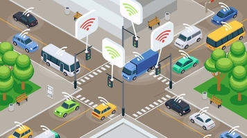

PAMETNI GRADOVI
Tehnologije koje oblikuju našu budućnost
| Početna | Tehnologije | Održivost | Transport | Kontakt |
Šta su pametni gradovi?
Pametni gradovi koriste tehnologije za poboljšanje kvalitete života svojih građana. To uključuje pametne prometne sisteme, energetski efikasna rješenja i održive prakse. U gradovima kao što su Barcelona i Singapur, tehnologije kao što su IoT (Internet of Things) i velika analitika podataka pomažu u stvaranju učinkovitijeg urbanog prostora.
Ova rješenja omogućavaju optimizaciju javnog prijevoza, smanjenje zagađenja i povećanje sigurnosti kroz pametne tehnologije, a u nastavku možete pročitati koje sve tehnologije oni koriste kako bi to postigli.
Tehnologije u pametnim gradovima
Pametni gradovi koriste razne tehnologije kako bi poboljšali život svojih građana. Evo nekoliko ključnih tehnologija:
 Internet stvari (IoT)
Internet stvari (IoT)
Mreža fizičkih objekata povezanih na internet, koja omogućava prikupljanje i razmjenu podataka u realnom vremenu. IoT uređaji omogućavaju pametnu analizu podataka, od pametnih brojila za praćenje potrošnje energije do senzora za praćenje zagađenja zraka. |
Veliki podaci
Analiza velikih količina podataka pomaže u donošenju boljih odluka i optimizaciji resursa. Korištenjem podataka o potrošnji energije, saobraćaju i ekološkim uvjetima, gradovi mogu unaprijediti učinkovitost, smanjiti troškove i reagirati na krizne situacije u stvarnom vremenu. |
|
Umjetna inteligencija (AI)
AI se koristi za automatizaciju procesa i poboljšanje efikasnosti u različitim sektorima, uključujući prediktivno održavanje infrastrukture, analizu podataka o prometu, te upravljanje energetskim sistemima. AI može pomoći u donošenju boljih odluka i predviđanju budućih potreba grada. |

Pametni prometni sistemi
Tehnologije za upravljanje saobraćajem koje pomažu u smanjenju zagušenja, poboljšanju sigurnosti i smanjenju emisije ugljen-dioksida. Ovi sistemi koriste senzore, kamere i analizu podataka za optimizaciju saobraćaja u realnom vremenu, čime se omogućava brži i sigurniji promet u gradovima. |